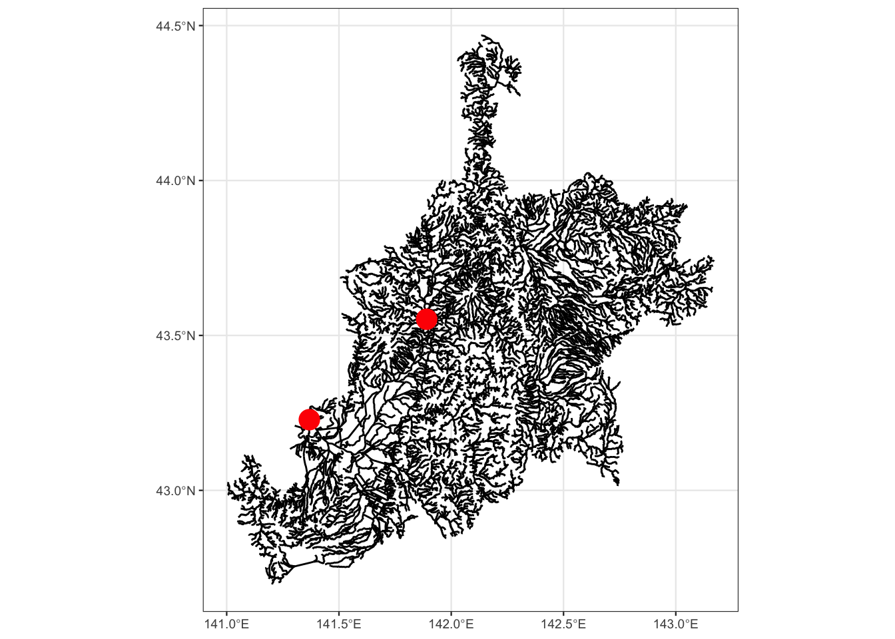
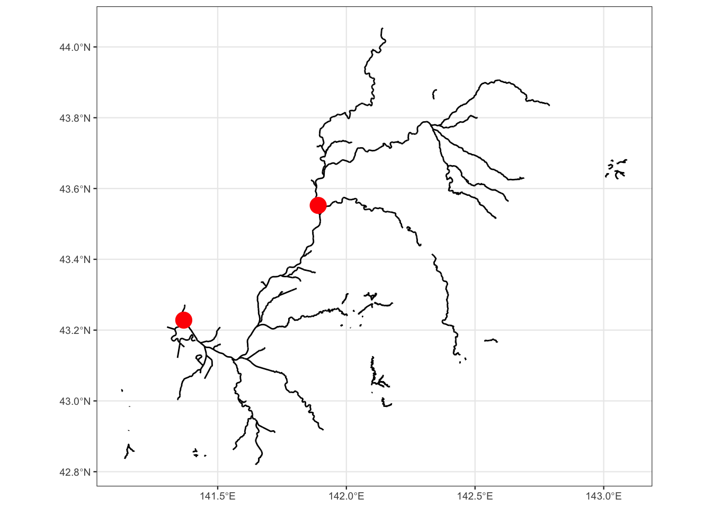
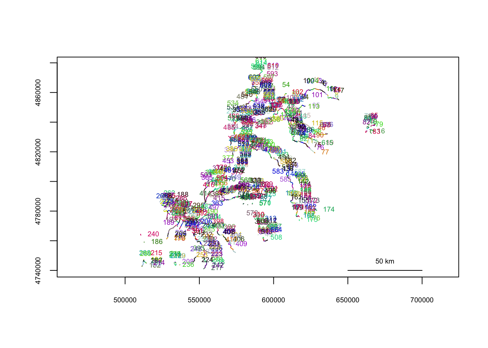

library(tidyverse)
library(sf)
library(riverdist)theme_set(theme_bw(base_size = 9))W05-09_01_GML)# データの読み込み
fname = "W05-09_01_GML/W05-09_01-g_Stream.shp"
river_line <- st_read(fname)## Reading layer `W05-09_01-g_Stream' from data source
## `/Users/abetk/Desktop/GitHubPages/R_spatial/W05-09_01_GML/W05-09_01-g_Stream.shp'
## using driver `ESRI Shapefile'
## Simple feature collection with 49157 features and 10 fields
## Geometry type: LINESTRING
## Dimension: XY
## Bounding box: xmin: 139.4108 ymin: 41.40087 xmax: 145.7973 ymax: 45.51731
## CRS: NA# 日本語が列名だと不便なので、列名を変更する
names(river_line) <- c(
"system_code", "river_code", "type", "rivername",
"startID", "endID", "ref", "direction", "riv_st_ID", "riv_end_ID",
"geometry"
)# 石狩川水系
ishikari <- river_line %>% filter(system_code == "810103")head(ishikari)## Simple feature collection with 6 features and 10 fields
## Geometry type: LINESTRING
## Dimension: XY
## Bounding box: xmin: 141.611 ymin: 42.82573 xmax: 142.6365 ymax: 43.90956
## CRS: NA
## system_code river_code type rivername startID endID ref direction
## 1 810103 8101030000 0 旧石狩川 0127245 0128686 3 1
## 2 810103 8101030114 4 祝梅川 0128695 0130192 3 1
## 3 810103 8101030202 2 須部都川 0127188 0127332 3 1
## 4 810103 8101030223 2 晩生内川 0127163 0128358 3 1
## 5 810103 8101030198 4 二号川 0125005 0127327 3 1
## 6 810103 8101030468 2 パンケメムナイ川 0147206 0147204 3,4 1
## riv_st_ID riv_end_ID geometry
## 1 0128520 0128685 LINESTRING (141.6402 43.153...
## 2 0128695 0130296 LINESTRING (141.689 42.8257...
## 3 0127170 0127391 LINESTRING (141.6131 43.358...
## 4 0127148 0128358 LINESTRING (141.7576 43.410...
## 5 0125005 0127329 LINESTRING (141.814 43.2956...
## 6 0146229 0147204 LINESTRING (142.6365 43.903...# crs未設定
ggplot(ishikari) + geom_sf()crsが未設定だとx軸とy軸はただの値が表示される
cap = "crsが未設定だとx軸とy軸はただの値が表示される"# crsを追加する
st_crs(ishikari) = "+proj=longlat +ellps=WGS84 +datum=WGS84 +no_defs"
ggplot(ishikari) + geom_sf()crsを設定すると緯度軽度表示になっていることがわかる
cap = "crsを設定すると緯度軽度表示になっていることがわかる"loc <- st_read("pointdata.csv",
options = c("X_POSSIBLE_NAMES=lon","Y_POSSIBLE_NAMES=lat"), quiet = TRUE)
st_crs(loc) <- "+proj=longlat +ellps=WGS84 +datum=WGS84 +no_defs"ggplot(ishikari) + geom_sf() +
geom_sf(data = loc, inherit.aes = FALSE, color = "red", size = 5)
riverdistではネットワークを作るところから始まる。 ラインが細かすぎると処理が遅いのでデータの区間を限定したほうがよい。 今回は区間種別でフィルターを作成するが、QGISなどですでに処理済みのデータを作成しておいてもよい
ishikari_filtered <- ishikari %>% mutate(type = as.numeric(type)) %>%
filter(type == 1)
ggplot(ishikari_filtered) + geom_sf() +
geom_sf(data = loc, inherit.aes = FALSE, color = "red", size = 5)
spatial dataframeにデータ形式を変更するline2network()でネットワークを作成する# UTM座標系に変換
ishikari_utm <- st_transform(ishikari_filtered, "+init=epsg:32654")## Warning in CPL_crs_from_input(x): GDAL Message 1: +init=epsg:XXXX syntax is
## deprecated. It might return a CRS with a non-EPSG compliant axis order.ishikari_river_network <- line2network(as_Spatial(ishikari_utm))##
## Units: m
##
## Removed 16 segments with lengths shorter than the connectivity tolerance.plot(ishikari_river_network)
# ポイントデータをutm座標系に変換する
points <- st_transform(loc, "+init=epsg:32654") %>%
mutate(
x = st_coordinates(geometry)[, 1],
y = st_coordinates(geometry)[, 2]
)
# ポイントデータのriver networkの中での位置を算出する
locs_in_river <- xy2segvert(
x = points$x, y = points$y,
rivers = ishikari_river_network)# 距離行列を算出する
distmat <- riverdistancemat(
locs_in_river$seg, locs_in_river$vert, ishikari_river_network
)